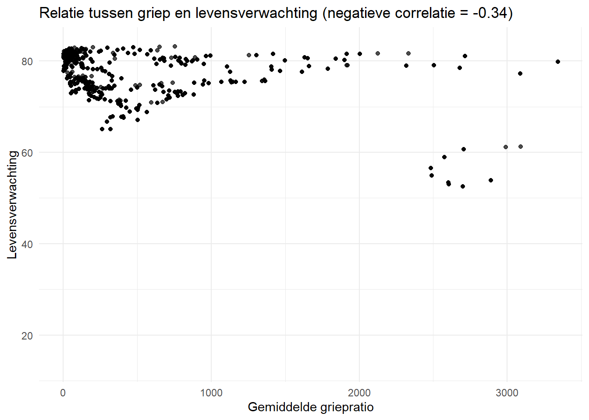
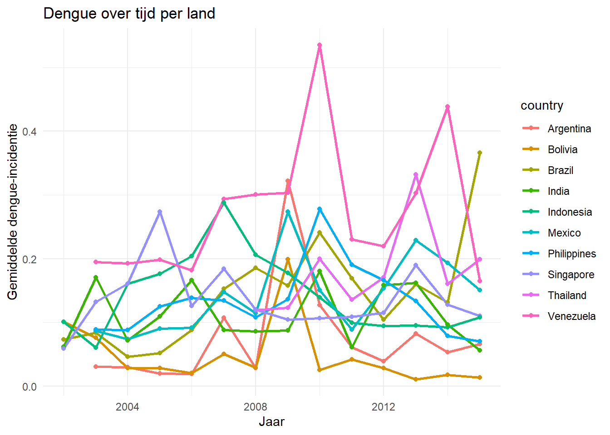
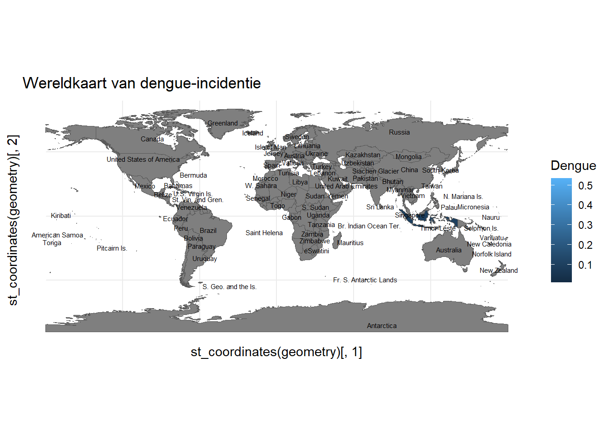

7 Structured Query Language
In deze opdracht wordt gewerkt met drie verschillende datasets: gegevens over dengue, flu en de gapminder data met informatie over landen en economie.
Het doel is om deze data eerst schoon te maken en ervoor te zorgen dat de landen en datums in alle datasets hetzelfde zijn. Daarna worden de datasets samengevoegd in een database met behulp van SQL.
Met SQL wordt de data bekeken en gecombineerd, zodat er nieuwe verbanden te zien zijn. De resultaten worden vervolgens weer ingeladen in R om er grafieken van te maken.
Deze opdracht laat zien hoe ik de verschillende databronnen kan samenbrengen en analyseren met behulp van R en SQL.
7.1 Stap 1: Laad de libraries
De volgende packages zijn nodig:
readr: Om csv-bestanden makkelijk in te lezen.dslabs: Bevat de gapminder dataset.stringr: Voor stringmanipulatie, zoals het aanpassen van tekstformaten.dplyr: Voor het manipuleren en schoonmaken van datatidyr: Data netjes maken:gather()(lange data),spread()(brede data),separate()(kolommen splitsen)lubridate: Datums eenvoudig verwerken:year(),month(),day()(datumdelen extraheren)ymd()(tekst → datum converteren)ggplot2: voor het maken van grafieken in Rrnaturalearth: voor het ophalen van wereldkaarten en geografische datarnaturalearthdata: bevat geografische datasets die door rnaturalearth gebruikt wordensf: werkt met ‘simple features’ voor het manipuleren en visualiseren van ruimtelijke/geografische data
7.2 Stap 2: Data inlezen in R
De datasets wordt eerst ingelezen met behulp van de functie read_csv() van het readr-package. De dengue- en flu-data bevatten enkele regels met metadata bovenaan, daarom wordt er geskippt (skip = 11) om direct bij de relevante data te beginnen. De gapminder data wordt geladen vanuit het dslabs package.
# Dengue data inlezen
dengue <- read_csv("https://raw.githubusercontent.com/DataScienceILC/tlsc-dsfb26v-20_workflows/main/data/dengue_data.csv",
skip = 11)
# Flu data inlezen
flu <- read_csv("https://raw.githubusercontent.com/DataScienceILC/tlsc-dsfb26v-20_workflows/main/data/flu_data.csv",
skip = 11)
# Gapminder data inlezen vanuit dslabs package
data("gapminder")
# Bekijk eerste paar rijen van elke dataset
head(dengue)## # A tibble: 6 × 11
## Date Argentina Bolivia Brazil India Indonesia Mexico Philippines
## <date> <dbl> <dbl> <dbl> <dbl> <dbl> <dbl> <dbl>
## 1 2002-12-29 NA 0.101 0.073 0.062 0.101 NA NA
## 2 2003-01-05 NA 0.143 0.098 0.047 0.039 NA NA
## 3 2003-01-12 NA 0.176 0.119 0.051 0.059 0.071 NA
## 4 2003-01-19 NA 0.173 0.17 0.032 0.039 0.052 NA
## 5 2003-01-26 NA 0.146 0.138 0.04 0.112 0.048 NA
## 6 2003-02-02 NA 0.16 0.202 0.038 0.049 0.041 NA
## # ℹ 3 more variables: Singapore <dbl>, Thailand <dbl>, Venezuela <dbl>## # A tibble: 6 × 30
## Date Argentina Australia Austria Belgium Bolivia Brazil Bulgaria Canada
## <date> <dbl> <dbl> <dbl> <dbl> <dbl> <dbl> <dbl> <dbl>
## 1 2002-12-29 NA NA NA NA NA 174 NA NA
## 2 2003-01-05 NA NA NA NA NA 162 NA NA
## 3 2003-01-12 NA NA NA NA NA 174 NA NA
## 4 2003-01-19 NA NA NA NA NA 162 NA NA
## 5 2003-01-26 NA NA NA NA NA 131 NA NA
## 6 2003-02-02 136 NA NA NA NA 151 NA NA
## # ℹ 21 more variables: Chile <dbl>, France <dbl>, Germany <dbl>, Hungary <dbl>,
## # Japan <dbl>, Mexico <dbl>, Netherlands <dbl>, `New Zealand` <dbl>,
## # Norway <dbl>, Paraguay <dbl>, Peru <dbl>, Poland <dbl>, Romania <dbl>,
## # Russia <dbl>, `South Africa` <dbl>, Spain <dbl>, Sweden <dbl>,
## # Switzerland <dbl>, Ukraine <dbl>, `United States` <dbl>, Uruguay <dbl>## country year infant_mortality life_expectancy fertility
## 1 Albania 1960 115.40 62.87 6.19
## 2 Algeria 1960 148.20 47.50 7.65
## 3 Angola 1960 208.00 35.98 7.32
## 4 Antigua and Barbuda 1960 NA 62.97 4.43
## 5 Argentina 1960 59.87 65.39 3.11
## 6 Armenia 1960 NA 66.86 4.55
## population gdp continent region
## 1 1636054 NA Europe Southern Europe
## 2 11124892 13828152297 Africa Northern Africa
## 3 5270844 NA Africa Middle Africa
## 4 54681 NA Americas Caribbean
## 5 20619075 108322326649 Americas South America
## 6 1867396 NA Asia Western Asia7.3 Stap 3: Data controleren.
Controle of de data in tidy format staat (elke variabele een kolom, elke observatie een rij, elke waarde een cel).
## spc_tbl_ [659 × 11] (S3: spec_tbl_df/tbl_df/tbl/data.frame)
## $ Date : Date[1:659], format: "2002-12-29" "2003-01-05" ...
## $ Argentina : num [1:659] NA NA NA NA NA NA NA 0.046 0.048 0.051 ...
## $ Bolivia : num [1:659] 0.101 0.143 0.176 0.173 0.146 0.16 0.225 0.109 0.147 0.119 ...
## $ Brazil : num [1:659] 0.073 0.098 0.119 0.17 0.138 0.202 0.179 0.239 0.205 0.142 ...
## $ India : num [1:659] 0.062 0.047 0.051 0.032 0.04 0.038 0.019 0.008 0.022 0.028 ...
## $ Indonesia : num [1:659] 0.101 0.039 0.059 0.039 0.112 0.049 0.06 0.039 0.078 0.048 ...
## $ Mexico : num [1:659] NA NA 0.071 0.052 0.048 0.041 0.042 0.049 0.054 0.075 ...
## $ Philippines: num [1:659] NA NA NA NA NA NA NA NA NA NA ...
## $ Singapore : num [1:659] 0.059 0.059 0.238 0.175 0.164 0.163 0.15 0.144 0.142 0.129 ...
## $ Thailand : num [1:659] NA NA NA NA NA NA NA NA NA NA ...
## $ Venezuela : num [1:659] NA NA NA NA NA NA NA 0.139 0.137 0.168 ...
## - attr(*, "spec")=
## .. cols(
## .. Date = col_date(format = ""),
## .. Argentina = col_double(),
## .. Bolivia = col_double(),
## .. Brazil = col_double(),
## .. India = col_double(),
## .. Indonesia = col_double(),
## .. Mexico = col_double(),
## .. Philippines = col_double(),
## .. Singapore = col_double(),
## .. Thailand = col_double(),
## .. Venezuela = col_double()
## .. )
## - attr(*, "problems")=<externalptr>## spc_tbl_ [659 × 30] (S3: spec_tbl_df/tbl_df/tbl/data.frame)
## $ Date : Date[1:659], format: "2002-12-29" "2003-01-05" ...
## $ Argentina : num [1:659] NA NA NA NA NA 136 145 141 135 134 ...
## $ Australia : num [1:659] NA NA NA NA NA NA NA NA NA NA ...
## $ Austria : num [1:659] NA NA NA NA NA NA NA NA NA NA ...
## $ Belgium : num [1:659] NA NA NA NA NA NA NA NA NA NA ...
## $ Bolivia : num [1:659] NA NA NA NA NA NA NA NA 426 427 ...
## $ Brazil : num [1:659] 174 162 174 162 131 151 184 162 194 177 ...
## $ Bulgaria : num [1:659] NA NA NA NA NA NA NA NA NA NA ...
## $ Canada : num [1:659] NA NA NA NA NA NA NA NA NA NA ...
## $ Chile : num [1:659] NA NA 1 0 0 0 0 0 0 0 ...
## $ France : num [1:659] NA NA NA NA NA NA NA NA NA NA ...
## $ Germany : num [1:659] NA NA NA NA NA NA NA NA NA NA ...
## $ Hungary : num [1:659] NA NA NA NA NA NA NA NA NA NA ...
## $ Japan : num [1:659] NA NA NA NA NA NA NA NA NA NA ...
## $ Mexico : num [1:659] NA NA NA NA NA NA NA NA NA NA ...
## $ Netherlands : num [1:659] NA NA NA NA NA NA NA NA NA NA ...
## $ New Zealand : num [1:659] NA NA NA NA NA NA NA NA NA NA ...
## $ Norway : num [1:659] NA NA NA NA NA NA NA NA NA NA ...
## $ Paraguay : num [1:659] NA NA NA NA NA NA NA NA NA NA ...
## $ Peru : num [1:659] 329 315 314 267 241 227 250 236 274 270 ...
## $ Poland : num [1:659] NA NA NA NA NA NA NA NA NA NA ...
## $ Romania : num [1:659] NA NA NA NA NA NA 664 736 740 864 ...
## $ Russia : num [1:659] NA NA NA NA NA NA NA NA NA NA ...
## $ South Africa : num [1:659] NA NA NA NA NA NA NA NA NA NA ...
## $ Spain : num [1:659] NA NA NA NA NA NA NA NA NA NA ...
## $ Sweden : num [1:659] NA NA NA NA NA NA NA NA NA NA ...
## $ Switzerland : num [1:659] NA NA NA NA NA NA NA NA NA NA ...
## $ Ukraine : num [1:659] NA NA NA NA NA NA NA NA NA NA ...
## $ United States: num [1:659] NA NA NA NA NA NA NA NA NA NA ...
## $ Uruguay : num [1:659] NA NA NA NA NA NA NA NA NA NA ...
## - attr(*, "spec")=
## .. cols(
## .. Date = col_date(format = ""),
## .. Argentina = col_double(),
## .. Australia = col_double(),
## .. Austria = col_double(),
## .. Belgium = col_double(),
## .. Bolivia = col_double(),
## .. Brazil = col_double(),
## .. Bulgaria = col_double(),
## .. Canada = col_double(),
## .. Chile = col_double(),
## .. France = col_double(),
## .. Germany = col_double(),
## .. Hungary = col_double(),
## .. Japan = col_double(),
## .. Mexico = col_double(),
## .. Netherlands = col_double(),
## .. `New Zealand` = col_double(),
## .. Norway = col_double(),
## .. Paraguay = col_double(),
## .. Peru = col_double(),
## .. Poland = col_double(),
## .. Romania = col_double(),
## .. Russia = col_double(),
## .. `South Africa` = col_double(),
## .. Spain = col_double(),
## .. Sweden = col_double(),
## .. Switzerland = col_double(),
## .. Ukraine = col_double(),
## .. `United States` = col_double(),
## .. Uruguay = col_double()
## .. )
## - attr(*, "problems")=<externalptr>## 'data.frame': 10545 obs. of 9 variables:
## $ country : Factor w/ 185 levels "Albania","Algeria",..: 1 2 3 4 5 6 7 8 9 10 ...
## $ year : int 1960 1960 1960 1960 1960 1960 1960 1960 1960 1960 ...
## $ infant_mortality: num 115.4 148.2 208 NA 59.9 ...
## $ life_expectancy : num 62.9 47.5 36 63 65.4 ...
## $ fertility : num 6.19 7.65 7.32 4.43 3.11 4.55 4.82 3.45 2.7 5.57 ...
## $ population : num 1636054 11124892 5270844 54681 20619075 ...
## $ gdp : num NA 1.38e+10 NA NA 1.08e+11 ...
## $ continent : Factor w/ 5 levels "Africa","Americas",..: 4 1 1 2 2 3 2 5 4 3 ...
## $ region : Factor w/ 22 levels "Australia and New Zealand",..: 19 11 10 2 15 21 2 1 22 21 ...## Rows: 659
## Columns: 11
## $ Date <date> 2002-12-29, 2003-01-05, 2003-01-12, 2003-01-19, 2003-01-2…
## $ Argentina <dbl> NA, NA, NA, NA, NA, NA, NA, 0.046, 0.048, 0.051, 0.051, 0.…
## $ Bolivia <dbl> 0.101, 0.143, 0.176, 0.173, 0.146, 0.160, 0.225, 0.109, 0.…
## $ Brazil <dbl> 0.073, 0.098, 0.119, 0.170, 0.138, 0.202, 0.179, 0.239, 0.…
## $ India <dbl> 0.062, 0.047, 0.051, 0.032, 0.040, 0.038, 0.019, 0.008, 0.…
## $ Indonesia <dbl> 0.101, 0.039, 0.059, 0.039, 0.112, 0.049, 0.060, 0.039, 0.…
## $ Mexico <dbl> NA, NA, 0.071, 0.052, 0.048, 0.041, 0.042, 0.049, 0.054, 0…
## $ Philippines <dbl> NA, NA, NA, NA, NA, NA, NA, NA, NA, NA, NA, NA, NA, 0.059,…
## $ Singapore <dbl> 0.059, 0.059, 0.238, 0.175, 0.164, 0.163, 0.150, 0.144, 0.…
## $ Thailand <dbl> NA, NA, NA, NA, NA, NA, NA, NA, NA, NA, NA, NA, NA, NA, NA…
## $ Venezuela <dbl> NA, NA, NA, NA, NA, NA, NA, 0.139, 0.137, 0.168, 0.169, 0.…## Rows: 659
## Columns: 30
## $ Date <date> 2002-12-29, 2003-01-05, 2003-01-12, 2003-01-19, 2003-…
## $ Argentina <dbl> NA, NA, NA, NA, NA, 136, 145, 141, 135, 134, 136, 134,…
## $ Australia <dbl> NA, NA, NA, NA, NA, NA, NA, NA, NA, NA, NA, NA, NA, NA…
## $ Austria <dbl> NA, NA, NA, NA, NA, NA, NA, NA, NA, NA, NA, NA, NA, NA…
## $ Belgium <dbl> NA, NA, NA, NA, NA, NA, NA, NA, NA, NA, NA, NA, NA, NA…
## $ Bolivia <dbl> NA, NA, NA, NA, NA, NA, NA, NA, 426, 427, 460, 541, 54…
## $ Brazil <dbl> 174, 162, 174, 162, 131, 151, 184, 162, 194, 177, 223,…
## $ Bulgaria <dbl> NA, NA, NA, NA, NA, NA, NA, NA, NA, NA, NA, NA, NA, NA…
## $ Canada <dbl> NA, NA, NA, NA, NA, NA, NA, NA, NA, NA, NA, NA, NA, NA…
## $ Chile <dbl> NA, NA, 1, 0, 0, 0, 0, 0, 0, 0, 0, 1, 1, 2, 1, 1, 1, 2…
## $ France <dbl> NA, NA, NA, NA, NA, NA, NA, NA, NA, NA, NA, NA, NA, NA…
## $ Germany <dbl> NA, NA, NA, NA, NA, NA, NA, NA, NA, NA, NA, NA, NA, NA…
## $ Hungary <dbl> NA, NA, NA, NA, NA, NA, NA, NA, NA, NA, NA, NA, NA, NA…
## $ Japan <dbl> NA, NA, NA, NA, NA, NA, NA, NA, NA, NA, NA, NA, NA, NA…
## $ Mexico <dbl> NA, NA, NA, NA, NA, NA, NA, NA, NA, NA, NA, NA, NA, NA…
## $ Netherlands <dbl> NA, NA, NA, NA, NA, NA, NA, NA, NA, NA, NA, NA, NA, NA…
## $ `New Zealand` <dbl> NA, NA, NA, NA, NA, NA, NA, NA, NA, NA, NA, NA, NA, NA…
## $ Norway <dbl> NA, NA, NA, NA, NA, NA, NA, NA, NA, NA, NA, NA, NA, NA…
## $ Paraguay <dbl> NA, NA, NA, NA, NA, NA, NA, NA, NA, NA, NA, NA, NA, NA…
## $ Peru <dbl> 329, 315, 314, 267, 241, 227, 250, 236, 274, 270, 312,…
## $ Poland <dbl> NA, NA, NA, NA, NA, NA, NA, NA, NA, NA, NA, NA, NA, NA…
## $ Romania <dbl> NA, NA, NA, NA, NA, NA, 664, 736, 740, 864, 824, 819, …
## $ Russia <dbl> NA, NA, NA, NA, NA, NA, NA, NA, NA, NA, NA, NA, NA, NA…
## $ `South Africa` <dbl> NA, NA, NA, NA, NA, NA, NA, NA, NA, NA, NA, NA, NA, NA…
## $ Spain <dbl> NA, NA, NA, NA, NA, NA, NA, NA, NA, NA, NA, NA, NA, NA…
## $ Sweden <dbl> NA, NA, NA, NA, NA, NA, NA, NA, NA, NA, NA, NA, NA, NA…
## $ Switzerland <dbl> NA, NA, NA, NA, NA, NA, NA, NA, NA, NA, NA, NA, NA, NA…
## $ Ukraine <dbl> NA, NA, NA, NA, NA, NA, NA, NA, NA, NA, NA, NA, NA, NA…
## $ `United States` <dbl> NA, NA, NA, NA, NA, NA, NA, NA, NA, NA, NA, NA, NA, NA…
## $ Uruguay <dbl> NA, NA, NA, NA, NA, NA, NA, NA, NA, NA, NA, 105, 102, …## Rows: 10,545
## Columns: 9
## $ country <fct> "Albania", "Algeria", "Angola", "Antigua and Barbuda"…
## $ year <int> 1960, 1960, 1960, 1960, 1960, 1960, 1960, 1960, 1960,…
## $ infant_mortality <dbl> 115.40, 148.20, 208.00, NA, 59.87, NA, NA, 20.30, 37.…
## $ life_expectancy <dbl> 62.87, 47.50, 35.98, 62.97, 65.39, 66.86, 65.66, 70.8…
## $ fertility <dbl> 6.19, 7.65, 7.32, 4.43, 3.11, 4.55, 4.82, 3.45, 2.70,…
## $ population <dbl> 1636054, 11124892, 5270844, 54681, 20619075, 1867396,…
## $ gdp <dbl> NA, 13828152297, NA, NA, 108322326649, NA, NA, 966778…
## $ continent <fct> Europe, Africa, Africa, Americas, Americas, Asia, Ame…
## $ region <fct> Southern Europe, Northern Africa, Middle Africa, Cari…Stap 4 t/m 6: Data transformeren, harmoniseren en samenvoegen
In deze stappen worden de flu- en dengue-datasets naar een tidy formaat getransformeerd, de landenamen geharmoniseerd zodat ze overeenkomen met die van de gapminder-dataset, en alle gegevens samengevoed.
7.4 Stap 4: Zet de data in tidy format
De oorspronkelijke data bevat landen als kolomnamen (wide format). pivot_longer() wordt gebruikt om de data om te zetten naar long format:
# Zet de data van wide naar long format:
# Elke kolom met een land wordt omgezet naar een rij met bijbehorende landnaam en waarde.
flu_tidy <- flu %>%
pivot_longer(-Date, names_to = "Country", values_to = "Flu_rate")
dengue_tidy <- dengue %>%
pivot_longer(-Date, names_to = "Country", values_to = "Dengue_rate")7.5 Stap 5: Harmoniseer landenamen
De landenamen in de flu- en dengue-datasets moeten overeenkomen met de namen in gapminder. Underscores worden door spaties vervangen en in specifieke namen gecorrigeerd:
# Corrigeer specifieke landenamen zodat deze overeenkomen met gapminder-data.
# Underscores worden vervangen door spaties.
flu_tidy <- flu_tidy %>%
mutate(Country = case_when(
Country == "United_States" ~ "United States",
Country == "South_Africa" ~ "South Africa",
TRUE ~ str_replace_all(Country, "_", " ")
))
dengue_tidy <- dengue_tidy %>%
mutate(Country = case_when(
Country == "United_States" ~ "United States",
Country == "South_Africa" ~ "South Africa",
TRUE ~ str_replace_all(Country, "_", " ")
))7.6 Stap 6: Voeg datasets samen
Er wordt jaarkolom toegevoed, het jaargemiddelde per land berekend en deze gekoppeld aan gapminder met left_join():
# Voeg jaarkolom toe op basis van de datum
flu_tidy <- flu_tidy %>% mutate(Year = year(Date))
dengue_tidy <- dengue_tidy %>% mutate(Year = year(Date))
# Bereken het jaargemiddelde per land voor griep
flu_avg <- flu_tidy %>%
group_by(Country, Year) %>%
summarise(Mean_Flu = mean(Flu_rate, na.rm = TRUE))
# Bereken het jaargemiddelde per land voor dengue
dengue_avg <- dengue_tidy %>%
group_by(Country, Year) %>%
summarise(Mean_Dengue = mean(Dengue_rate, na.rm = TRUE))
# Combineer met gapminder-data via left joins
combined_data <- gapminder %>%
left_join(flu_avg, by = c("country" = "Country", "year" = "Year")) %>%
left_join(dengue_avg, by = c("country" = "Country", "year" = "Year"))De combined_data dataset bevat nu voor elk land en jaar gegevens over bevolkingsomvang, levensverwachting, inkomen per hoofd én ziektelast door griep en dengue
7.7 Stap 7: Zet data in een SQL-database
Schrijf de datasets weg naar CSV’s en gebruik DBeaver of een ander tool om deze in een PostgreSQL database te laden.
7.8 Stap 8: Importeer de CSV-bestanden in DBeaver
- Open DBeaver.
- Maak een nieuwe PostgreSQL database aan met de naam
workflowsdb. - Importeer de bestanden
flu_long.csv,dengue_long.csvengapminder_clean.csvals drie aparte tabellen:
fludenguegapminder
7.10 Stap 8: Voer een join uit met SQL
Nu is het mogelijk om een JOIN uit te voeren om de tabellen te combineren. Bijvoorbeeld: combineer alle drie de tabellen op country en year.
-- Combineer de drie tabellen via LEFT JOIN op country en year
SELECT
g.country,
g.year,
g.life_expectancy,
g.gdp,
g.population,
f.mean_flu,
d.mean_dengue
FROM gapminder g
LEFT JOIN flu f
ON g.country = f.country AND g.year = f."Year"
LEFT JOIN denguee d
ON g.country = d.country AND g.year = d."Year";7.11 Stap 8: Inlezen en visualiseren in R
7.11.1 A. visualiseer relatie tussen griep en levensverwachting
# Lees samengestelde data in
joined_data <- read_csv("data/joined_data.csv")
# Bereken de correlatie (gebruik alleen rijen zonder NA's)
correlatie <- cor(joined_data$mean_flu, joined_data$life_expectancy, use = "complete.obs")
# Maak een tekst voor in de titel
cor_text <- ifelse(correlatie > 0, "positieve", "negatieve")
# Visualiseer de relatie in een scatterplot
ggplot(joined_data, aes(x = mean_flu, y = life_expectancy)) +
geom_point(alpha = 0.7) +
labs(
title = paste0("Relatie tussen griep en levensverwachting (", cor_text, " correlatie = ", round(correlatie, 2), ")"),
x = "Gemiddelde griepratio",
y = "Levensverwachting"
) +
theme_minimal()
7.11.2 B. Lijngrafiek over tijd per land
Doel: Ontwikkeling van bijvoorbeeld dengue of flu per land over de jaren.
# Lijngrafiek voor dengue over tijd, per land
joined_data %>%
filter(!is.na(mean_dengue)) %>%
ggplot(aes(x = year, y = mean_dengue, color = country)) +
geom_line(linewidth = 1) +
geom_point() +
labs(
title = "Dengue over tijd per land",
x = "Jaar",
y = "Gemiddelde dengue-incidentie"
) +
theme_minimal()
7.11.3 C. Choropleth map (wereldkaart)
Doel: Visueel geografisch overzicht van ziektelast of GDP.
# Laad wereldkaart als sf-object
world <- ne_countries(scale = "medium", returnclass = "sf")
# Voeg de epidemiologische data toe aan het kaartobject
map_data <- left_join(world, joined_data, by = c("name" = "country"))
# Bereken de centroiden van de landen voor de labels
map_data_centroids <- st_centroid(map_data)
# Plot dengue-waarden als kleuren op wereldkaart
ggplot(map_data) +
geom_sf(aes(fill = mean_dengue)) +
geom_text(data = map_data_centroids,
aes(x = st_coordinates(geometry)[,1], y = st_coordinates(geometry)[,2], label = name),
size = 2, color = "black", check_overlap = TRUE) +
labs(title = "Wereldkaart van dengue-incidentie",
fill = "Dengue") +
theme_minimal()